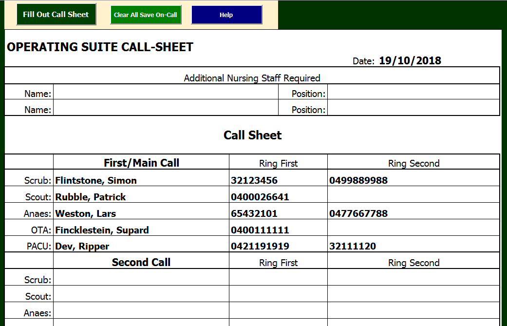

Getting Started¶
System Requirements¶
“Call Sheet” (also known as CallSheet) is an Excel workbook using Visual Basic for Applications (a scripting language) to facilitate creating a on-call document for Operating Theatres and Post-Op Recovery, to submit to the after-hours coordinator. As the software was written in and runs in Excel, there is no installation required except for Excel itself, which the organisation has provided. This workbook can be opened anywhere Excel is available. This file best serves the Operating Theatre when stored on a local drive. This document is contained in a csHelp folder and should accompany the Call Sheet workbook.
Starting Call Sheet¶
When you open Call Sheet in Excel 2016, security settings (set by Queensland Health IT services) may issue a security warning:
- Some active content has been disabled. Click for more details.
Next to this warning is a button labelled [Enable Content]. Content must be enabled in order for the software to work. When you select [Enable Content], another security warning may appear, asking whether you wish to make this file a ‘Trusted Document’. If you wish to no longer see these warnings, click [Yes]. If you wish to disable warnings for networked files (any files that live on the server instead of on the PC you’re working on), tick the box in the lower left-hand corner.
Once content has been enabled, the Call Sheet workbook will resize itself to full-screen. The workbook defaults to the “CallSheet” worksheet:
…which has the call sheet form, and one larger button and two smaller buttons on it. The larger button with the caption (“Fill Out Call Sheet”) brings up the “On-Call” form that facilitates filling out the Call Sheet.